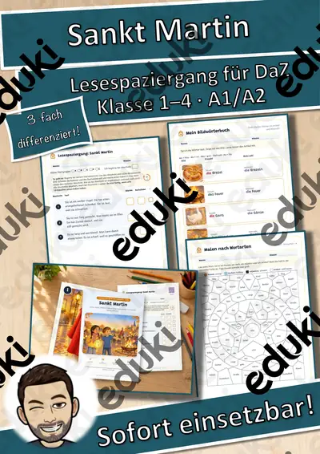
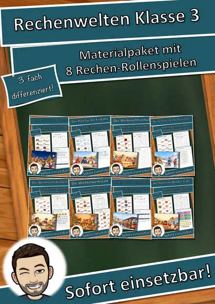
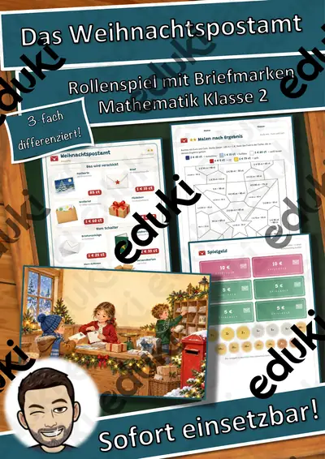
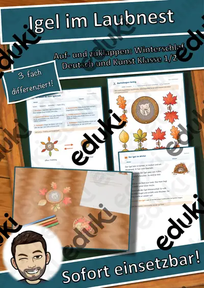
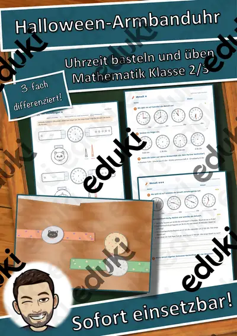
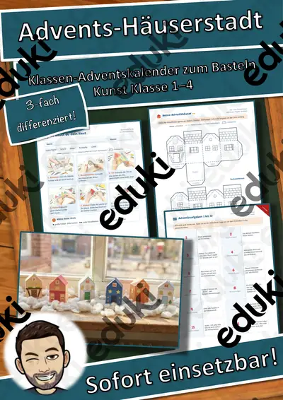

Lesespaziergang Materialpaket: 3 Geschichten, 6-fach differenziert – Herbst, Advent, Winter (Klasse 1–4, DaZ)

Lesespaziergang Vögel am Futterhaus – 6-fach differenziert mit Bildkarten, Sternchenaufgaben und Audio (Klasse 1–4)

Lesespaziergang Auf dem Weihnachtsmarkt – 6-fach differenziert mit Bildkarten, Sternchenaufgaben und Audio (Klasse 1–4)

Lesespaziergang Ein Nebeltag im November – 6-fach differenziert mit Bildkarten, Sternchenaufgaben und Audio (Klasse 1–4)

Lesespaziergang Nikolausabend: Stiefel, Sterne, Plätzchenduft – 8 Stationen in 3 Lesestufen mit Hörfassung (Klasse 1–2, DaZ)

Lesespaziergang Tiere im Winter: Pit, der Igel, sucht ein Bett – 8 Stationen in 3 Lesestufen mit Hörfassung (Klasse 1–2, DaZ)

Lesespaziergang Laternenzeit: Linas Laterne – 8 Stationen in 3 Lesestufen mit Hörfassung (Klasse 1–2, DaZ)

Der Faschingsladen – Rollenspiel Kombinatorik und Rechnen mit Geld, 3-fach differenziert (Klasse 2)

Lesespaziergang DaZ: Wir backen – Wortschatz mit Rätseln, 3-fach differenziert (Klasse 1–4)

Lesespaziergang DaZ: Spielen im Schnee – Wortschatz mit Rätseln, 3-fach differenziert (Klasse 1–4)

Lesespaziergang DaZ: Gemüse – Wortschatz mit Rätseln, 3-fach differenziert (Klasse 1–4)

Lesespaziergang DaZ: Sankt Martin – Wortschatz mit Rätseln, 3-fach differenziert (Klasse 1–4)

Materialpaket Rechenwelten im Winter für die 3. Klasse: 8 Mathe-Rollenspiele, 3-fach differenziert (Weihnachtsbäckerei, Lichterpark, Eisbahn & mehr)

Materialpaket Rechenwelten im Winter für die 2. Klasse: 6 Mathe-Rollenspiele, 3-fach differenziert (Weihnachtsmarkt, Kinderkino, Lebkuchen & mehr)

Materialpaket Feste im Winter für die 2. Klasse: 6 Lesespurgeschichten mit Rätselaufgaben (Sankt Martin, Nikolaus, Advent, Weihnachten & Silvester)

Das Weihnachtspostamt – Rollenspiel Rechnen mit Euro und Cent, gemischte Schreibweise, 3-fach differenziert (Klasse 2)

Igel im Laubnest – Klappnest basteln mit Sachtext Winterschlaf, 3-fach differenziert (Tiere im Herbst, Klasse 1/2)

St.-Martins-Laterne aus einem Blatt – falten, einschneiden, rollen, mit Martinsgeschichte, 3-fach differenziert (Klasse 2/3)

Herbst-Klappkarte Eichhörnchen – Figurenkarte basteln mit Sachtext, 3-fach differenziert (Tiere im Herbst, Klasse 2/3)

Flatter-Fledermaus am Stab – bewegliche Bastelfigur mit Sachtext, 3-fach differenziert (Halloween/Herbst, Klasse 2/3)

Der Kürbis von innen – Klapp-Kürbis basteln und beschriften, 3-fach differenziert (Halloween/Herbst, Klasse 1/2)

Halloween-Ziehkarten – Präpositionen sichtbar machen: über, vor, neben, auf, 3-fach differenziert (Klasse 1/2, DaZ)

Spinnen-Rätsel-Faltkarte – Halloween-Rätsel lesen und schreiben, Pop-up-Spinne, 3-fach differenziert (Klasse 2/3)

Mein Grusel-Meter – Halloween-Drehkarte basteln, Adjektive steigern und vergleichen, 3-fach differenziert (Klasse 2/3)

Halloween-Hüpffiguren – 6 Bastelvorlagen mit Federkugel, Steckbrief und Geschichte, 3-fach differenziert (Klasse 1/2)

Halloween-Armbanduhr aus Papier – Uhrzeit lernen mit Bastelvorlage, 3-fach differenziert (Klasse 2/3)

Halloween-Handpuppen – Bastelvorlage mit Sachtext und Puppentheater, 3-fach differenziert (Klasse 1/2)

Fingerpuppen Wintertiere – Bastelvorlage mit Sachtext und Sprechaufgaben, 3-fach differenziert (Klasse 1/2)

Wimpelkette Winter – Bastelvorlage mit Wintermotiven, Buchstaben WINTER und eigenen Wimpeln, 3-fach differenziert (Klasse 1–4)

Advents-Häuserstadt – Klassen-Adventskalender zum Basteln mit 24 Adventsaufgaben, 3-fach differenziert (Klasse 1–4)
Keine Materialien gefunden – versuch einen anderen Suchbegriff oder Filter.
Selbstständig werden
In Klasse 2 wollen Kinder zeigen, was sie schon können. Die Materialien dieser Seite geben dafür Anlässe: Texte, die sich allein lesen lassen, Rätsel mit Selbstkontrolle und kleine Projekte, bei denen jedes Kind etwas beisteuert.
Deutsch und Sachunterricht
Neben den Lesespaziergängen „Lesespaziergang Nikolausabend“ und „Lesespaziergang Vögel am Futterhaus“ gibt es „Lesespaziergang Auf dem Weihnachtsmarkt“ und „Lesespaziergang Ein Nebeltag im November“. Alle Texte stehen in mehreren Lesestufen bereit, sodass die Klasse zusammenarbeitet, obwohl die Lesekompetenz stark streut. Für Sachthemen aus dem Wald gibt es das „Materialpaket Wald Steckbriefe Laubbaum/Nadelbaum“.
Rechenwelten
In der Mathematik tragen Rollenspiele: „Der Faschingsladen“, „Das Weihnachtspostamt“ und die Winterpakete für die 2. und 3. Klasse. Kinder übernehmen eine Rolle, rechnen im Spiel und kontrollieren mit der Lösung.
Feste, Musik und Gestalten
Die Ethikreihe umfasst „Ostern“, „Weihnachten in anderen Ländern“, „Silvester und Neujahr“ und „Sankt Martin“, gebündelt im „Materialpaket Feste im Winter für die 2. Klasse“. In Musik gibt es „Orff-Instrumente“ und mehrere Fassungen der „Hörwerkstatt Geräusche“. Kunst bietet „Igel im Laubnest“ und „Halloween-Handpuppen“. Für das Klassenklima sorgen das „Knobel-Adventskalender: 24 Rätsel“ und der Gemeinschafts-Weihnachtsbaum zum Ausmalen.
Differenzieren ohne Mehraufwand
Zweitklässler lesen sehr unterschiedlich. Deshalb liegen viele Materialien in mehreren Stufen vor: dieselbe Geschichte, aber mit leichterem oder anspruchsvollerem Text. So arbeitet die ganze Klasse am selben Thema, und niemand muss ein anderes Blatt bekommen als die Sitznachbarin. Lösungen sind dabei, die Kinder kontrollieren selbst und gewinnen Selbstvertrauen. Die Fachfilter helfen, wenn du nur nach Mathematik oder Sachunterricht suchst.
Für Klassenzimmer und Zuhause
Viele Blätter funktionieren auch als Wochenplanaufgabe oder als Hausaufgabe, weil sie ohne Erklärung der Lehrkraft auskommen. Eltern finden die Lösung am Ende und können mitkontrollieren.
Häufige Fragen
Wie lange dauert ein Lesespaziergang in Klasse 2?
Etwa eine Unterrichtsstunde, je nach Textlänge und Lesestufe.
Gibt es Material für Kinder mit Deutsch als Zweitsprache?
Ja, die Reihe „Lesespaziergang DaZ“ mit Themen wie „Wir backen“ und „Gemüse“.
Sind Feste anderer Religionen vertreten?
Ja, etwa „Weihnachten in anderen Ländern“ und „Silvester und Neujahr“.
Können Eltern mitarbeiten?
Bei Bastelideen und Wichtelpost ist das gut möglich. Für die Schule sind die Materialien selbsterklärend.